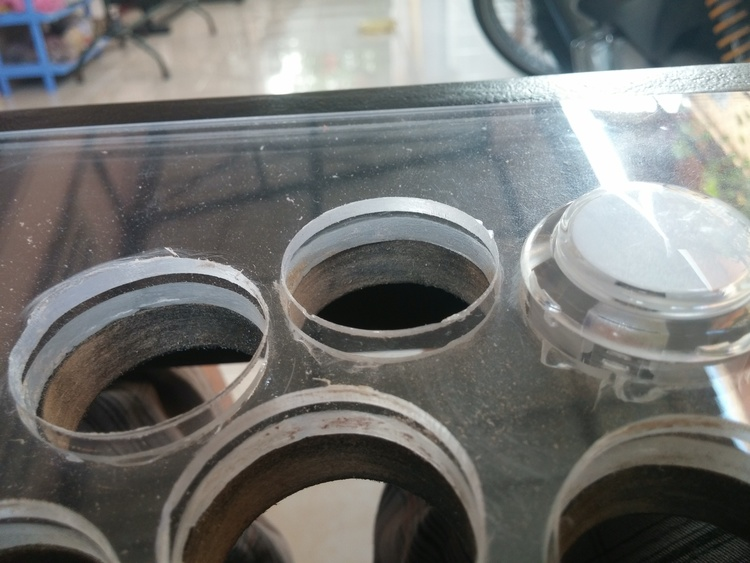
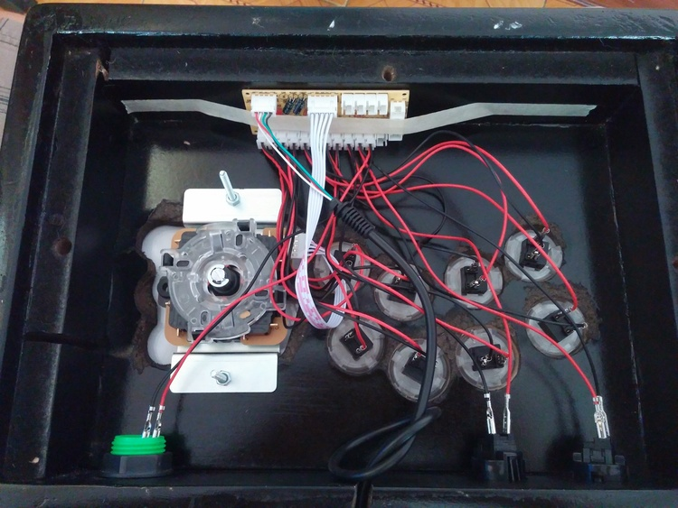
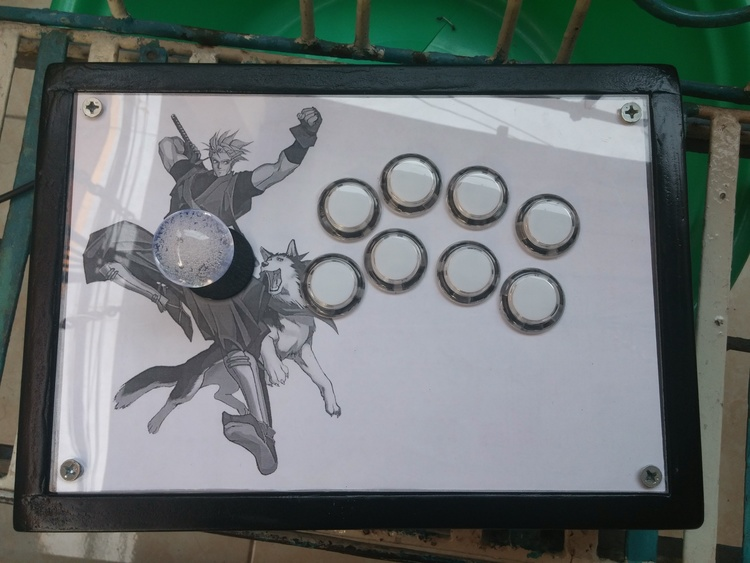
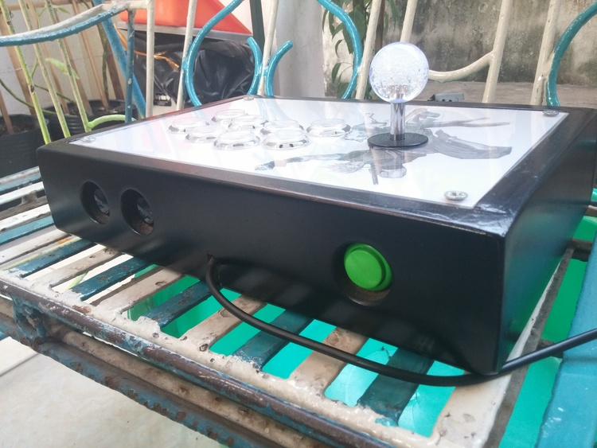

My first DIY fightstick: Part 2
It’s been a while since I started my arcade stick project. To be honest I got lazy and paused the whole thing for a while, but yesterday I needed a distraction so… everything came together much more nicely than I thought!
I did it!
I was almost done in Part 1, except for the fact that button holes on the top panels didn’t align, and the topmost panel flexed a bit because of imprecise screw holes:

To fix the button holes, I simply wrapped my roughest sandpaper around the drill bit and used it as a poor man’s sander to make the holes slightly bigger, just enough for buttons to fit. This took a while because the sandpaper pieces kept failing on me. Good thing I stock a huge roll in the first place! :-)
The flexing panel was surprisingly trivial to fix: I simply made one corner’s hole a bit bigger to allow its screw to go all the way in properly. No more stupid gaps!
Now that every piece was how it should be, the fun part began: assembling. The inside looked like this:

Notice the knot where the USB cable poked out? It was there as a safeguard against pulling so that the PCB doesn’t get yanked around. Later on I actually labeled every pair of wires for each button and secured the PCB better with more resilient tape, but I forgot to take photos and I’m now too lazy to open up the whole thing again so… you get the idea.
As for the top panel artwork, I planned quite a few colored designs, but was too lazy to go to a printing shop. As luck would have it, I had a black and white printer at home, so I grabbed some random Galford image on the internet and printed out one sheet just to see how it would look. It turned out much better than expected so I kept it that way.

Note that I bought translucent buttons. These are worth the higher price tag because it is possible to take them apart and insert artwork pieces under the cover. Just google custom fightsticks and you’ll find people making use of these buttons with stunning results. But then again, I’m a lazy butt so my minimalistic design actually saved me from some tedious button modding. Maybe when I get better inspirations, maybe.
{kind=link}
{kind=link}
Following the monochrome theme, the placeholder “Ken Flowchart” bottom piece from last post became official (I also trimmed the excess paper later):

Oh, and here’s a front shot for completeness’ sake:

Thoughts
All in all, this turned out much better than I expected. The whole thing feels solid to play with, and the plexiglass top panel makes a nice feeling palm rest. However, since I went a bit liberal on panel layers, it’s a tad heavier than my previous stick (which is already heavier than your average big brand sticks). On the flip side, I can be more aggressive with my joystick spinning sessions thanks to the extra weight.
I’m also thinking of adding non-slip padding to the bottom. I almost exclusively play with the fightstick on my lap so it’s not actually necessary gameplay-wise, but without padding, the bottom screw heads stick out and would definitely scratch my table whenever I place the stick on it. Better be safe than sorry!
That’s it! This project has been fun, and to me it served as an awesome gateway drug to the DIY world. Hopefully I inspired some of you to start your own projects too. Let me know how it goes!